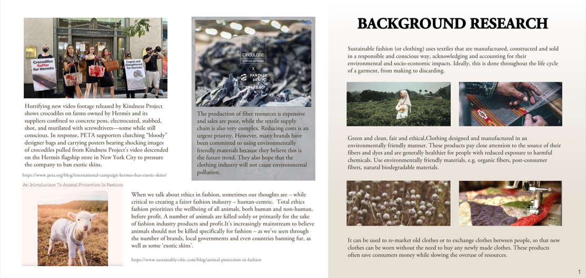
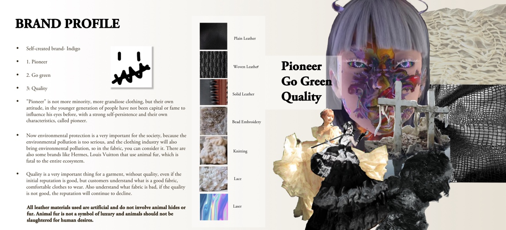
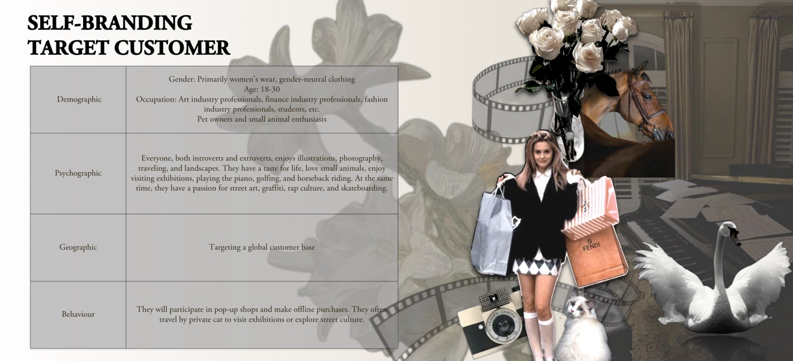
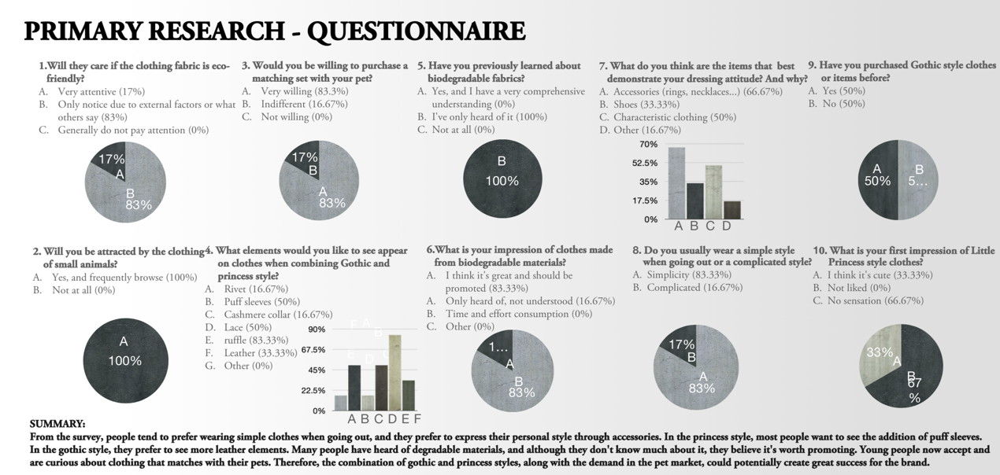
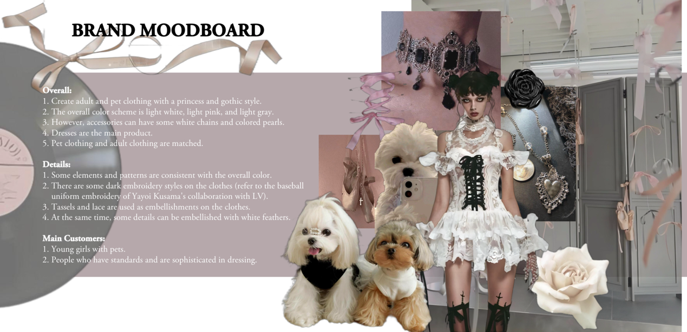
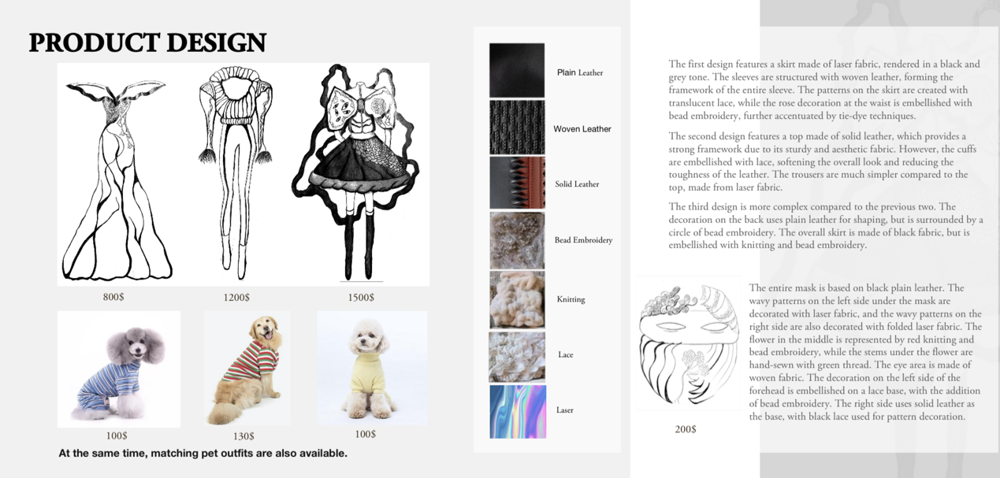
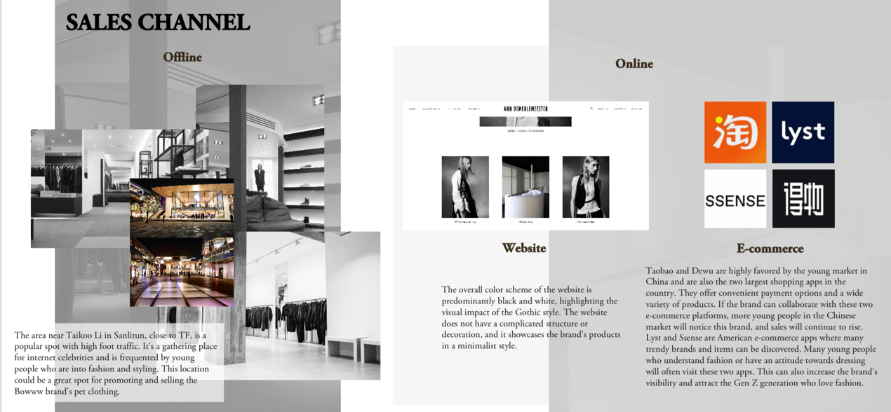
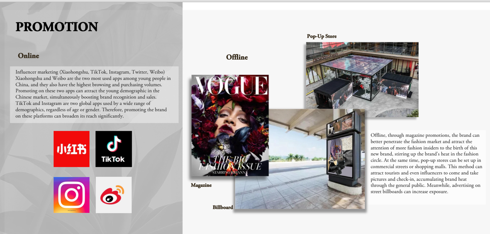
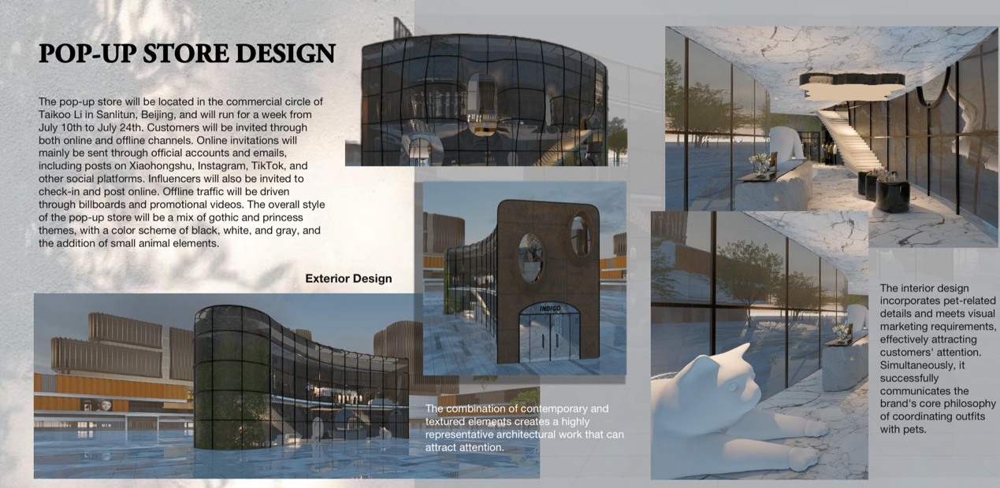
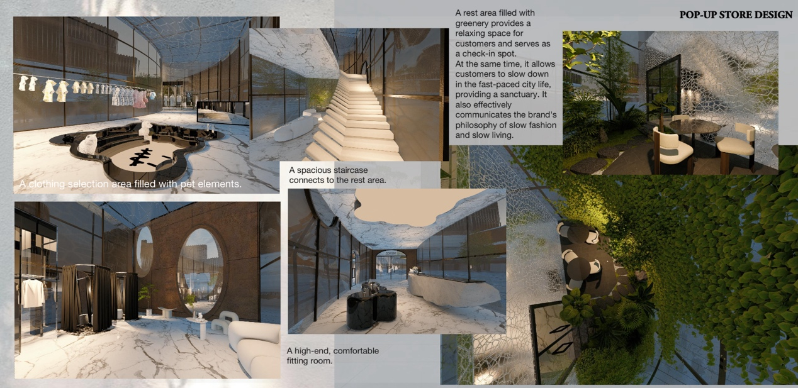

Self created brand-Indigo
This project is a self-initiated brand venture. Research shows that the pet clothing market is rapidly expanding as an increasing number of people consider their pets as part of the family. The brand is specifically targeted towards young animal enthusiasts, acknowledging the immense joy and enduring companionship that pets provide. This sentiment extends to the creation of distinctive pet clothing. Additionally, the brand incorporates sustainable practices into its operations, reflecting a thoughtful approach towards environmental responsibility.
  Brand Introduction
This brand aims to express individuality and attitude on the outside while maintaining a sense of childlike innocence on the inside. Although society may wear down one's edges, the core values remain steadfast. The exterior may appear bold and unique, but a deeper look reveals an inner charm and independent thought.
Customers of this brand are surrounded by fresh, new things and the latest fashion trends, yet they are not swayed by every passing fad. They maintain their own sense of style and clothing preferences. The brand targets young people who love animals, understanding that pets bring immense joy and long-lasting companionship. This extends to creating special clothing for pets as well.
Research shows that the market for pet clothing is expanding rapidly, with more people treating their pets as family members. The sales in pet stores now rival those of ready-to-wear brands. This brand attracts individuals with a strong sense of personal style and insight, as well as a large group of pet owners who seek stylish options for both themselves and their furry friends.
I did a questionnaire to different group of people‘s thoughts.
My case study is Chanel 2019 Spring- Summer Haute Couture Collection; Balenciaga pop-up; and Pet market. After these I made a SWOT analysis.
STRENGTHS:
1. Matching outfits for people and pets can attract young people with a strong sense of style.
2. The brand can attract customers who have small pets at home.
3. The brand's unique style attracts customers who love to find niche things.
4. Extensive cooperation with online e-commerce platforms.
5. Online promotion uses design platforms to directly hit precise user roups.
6. The gothic and little princess design styles are prominent.
WEAKNESSES:
1. May not have the reputation of some century-old stores.
2. The new brand has just been established and the brand category is relatively small.
3. The cost of offline stores is high.
4. User loyalty still needs to be built.
OPPORTUNITIES:
1. Nowadays, young people pursue the happiness that pets bring to them, so more people will keep pets and consume for their pets.
2. Everyone wants to find a unique outfit and pursue niche things.
3. This brand is exactly the niche brand with attitude they are looking for.
4. Expand the user group through creative flash store marketing that attracts young people's attention.
5. The operation and promotion of social media accurately capture precise users.
THREATS:
1. The brand's reputation might be overshadowed by the popularity of some competing brands.
2. People might be wary of new brands they are not familiar with.
3. The pet market is highly competitive.
SUMMARY:
SO: To attract more young people to find their own niche clothing with attitude, and to allow more people with pets to create a shared wardrobe for themselves and their cats. At the same time, a group of people who love niche brands can find what they like in this store.
ST: Although the brand and concept are good, it may face the problem of insufficient reputation. Because it is in the early stage of the brand, it may be difficult to improve the reputation and it will take time.
WT: The brand's reputation might be overshadowed by some competitors, and there is no homewear. Also, this brand mainly focuses on women's products and pet clothing, which will only attract some young girls who have their own opinions and pursuits about dressing. It may be difficult for some traditionally dressed people to accept.
OT: More and more people have their own pets, but people generally feel that new brands are not as reliable as old brands, and they may be overshadowed by competitors in the same track.
     